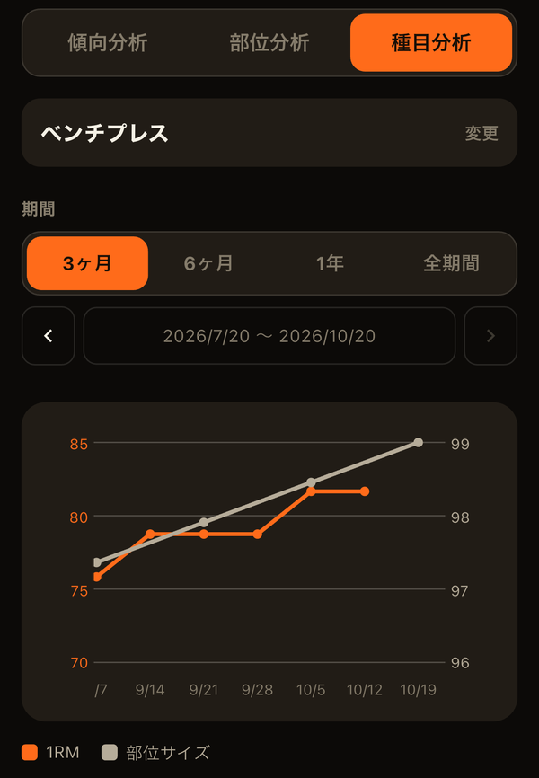

筋トレを続けているのに体重がほとんど変わらず、「本当に成果が出ているのだろうか」と不安になったことはありませんか。体重は筋肉・脂肪・水分などをまとめた数字のため、筋肉が増えて脂肪が減ると、体が変わっていても数字はあまり動きません。そこで役に立つのが、腕や脚などの部位のサイズ（周径囲）の記録です。
体重だけでは成果が見えにくい理由
体重は1日のうちでも食事や水分で1〜2kg程度は簡単に上下します。筋肉の増加はそれよりずっとゆっくりなので、体重の推移だけで筋肉の変化を読み取るのは困難です。部位のサイズを測っておけば、「体重は同じでも腕は太くなり、ウエストは細くなった」といった変化を数字で確かめられます。
測り方のコツ
サイズの変化は数ミリ〜数センチと小さいため、測るたびに条件がずれると、本当の変化か測り方の誤差か区別がつかなくなります。次の点をそろえるだけで、記録の信頼性はぐっと上がります。
- 時間帯をそろえる：朝起きてトイレを済ませた後など、毎回同じタイミングで測る。トレーニング直後はパンプで一時的に太くなるので避ける
- 位置をそろえる：上腕なら一番太い位置、太ももなら脚の付け根から何cm、など自分の基準を決めておく
- メジャーを床と平行に：斜めに巻くと長めに出る。締め付けず、たるませず、肌に沿わせる程度で
- 力を入れるかどうかを決めておく：上腕は力こぶを作るか力を抜くか、どちらかに統一する
- 左右とも測る：腕・前腕・太もも・ふくらはぎは左右で差が出やすく、片側だけでは偏りに気付けない
どのくらいの頻度で測るか
毎日測っても、日々の誤差に埋もれて変化はほとんど見えません。2〜4週間に1回程度で十分です。見るときも1回ごとの増減ではなく、数ヶ月単位の傾向で判断するのがおすすめです。
トレーニング量と並べて見る
サイズの記録が特に役立つのは、トレーニングの記録と並べて見たときです。「上腕のセット数を増やした時期から腕が太くなり始めた」「脚のトレーニングが減った月はサイズも止まっていた」というように、やったことと結果のつながりが見えると、次に何を増やすべきか判断しやすくなります。
ただし、サイズには脂肪や体のむくみも含まれます。ウエストや胸の数字は体脂肪の変化の影響も受けるため、体重・体脂肪率と合わせて見ると読み違いを防げます。
LiFTYの「体の記録」では、体重・体脂肪率に加えて、首・胸部・肩幅・ウエスト・臀部、上腕・前腕・太もも・ふくらはぎ（それぞれ左右）を記録できます。分析タブでは、部位分析でその部位のセット数とサイズの推移を、種目分析で推定1RMなどとサイズの推移を、1つのグラフに重ねて見られます（分析タブの使い方）。

関連記事
LiFTYでは、体重・体脂肪率から腕・脚の左右のサイズまで16項目を記録し、トレーニングの記録と並べて推移を確かめられます。アカウント作成なしで、今すぐ試せます。
App Storeでダウンロード